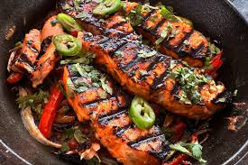

Salmon Zarandeado

Ingredients
- Salmon 1-1.5kg con piel
- Ajo pelado 20 gr
- Salsa botanera Costa brava 150ml
- Mantequilla 90gr
- Cosome de pollo 5 gr
- Pimienta 5 gr
- Salsa Maggi 10ml
- Catsup 100ml
- Cebolla blanca 1/2 pieza
- Pimiento morron 1 pieza
- Chile guero 2 piezas
- Chile serrano 2 piezas
Preparacion
- Corta en julianas la cebolla, los chiles gueros y el pimiento morron, ponlos en un sarten, agrega un poco de aceite y cocina hasta suavizar.
- Para el adobo mezcla en una licuadora la salsa botanera, la catsup, la matequilla, el ajo, la maggi y el consome
- Sazona el salmón con aceite, sal, pimienta y adobo y séllalo unos 3-4 minutos por lado a fuego directo.
- La piel ponla en fuego indirecto y al final, pásala a fuego directo a que se haga chicharrón
- Ármate unos tacos con la base de vegetales primero y luego el salmón
- Hasta el último.. Ya emplatado se agrega un poco de limón y Cilantro fresco, y si quieres rebanadas de serrano
Return